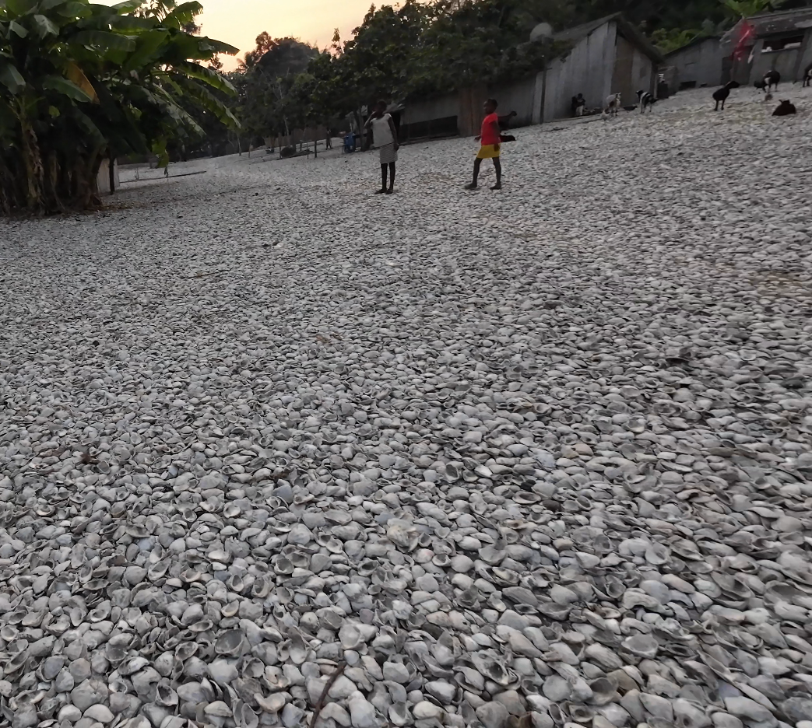

Congo
Gorilla Trekking
While in the Democratic Republic of the Congo, I visited a region where I observed western lowland gorillas in their natural environment. These gorillas, native to the lowland tropical forests of Central Africa, are less territorial than mountain gorillas, and it's possible to make eye contact with them without being charged at. Ecotourism efforts in the area help support conservation initiatives while providing income to local communities.

Our gorilla trek guide, Lambert, with a fruit that the gorillas like to eat.


Island of Shells
I also visited an island composed almost entirely of discarded freshwater mussel shells, the result of generations of harvesting by nearby communities. These mussels are a traditional food source in the region. After being collected from the river, they are typically skewered and roasted over open fires. I had the opportunity to try them during our visit; they had a savory, slightly briny flavor and a firm texture.

The accumulation of shells over time has gradually expanded the island's surface, creating an unusual but stable landform. The site is not only a byproduct of local dietary practices but also serves as an informal historical record of human habitation and subsistence along the river. Although not officially documented in tourist materials, places like this illustrate how local ecological knowledge and cultural practices have shaped the landscape over centuries.

Tata Gonda
I met members of Tata Gonda, a religious movement based in the Democratic Republic of the Congo that follows the teachings of the late spiritual leader Tata Gonda Wasilua. The group combines elements of Christianity with indigenous African religious practices. Its members lead disciplined, prayer-centered lives and often wear modest clothing. Their uniform appearance, which includes military-style attire, is meant to represent their identity as a serious, spiritual force. Instead of bathing, they cover themselves in ash every morning to use it as an antiseptic.


Curious children peek from behind a wall—one poses for the camera wearing sunglasses and flashing a peace sign.